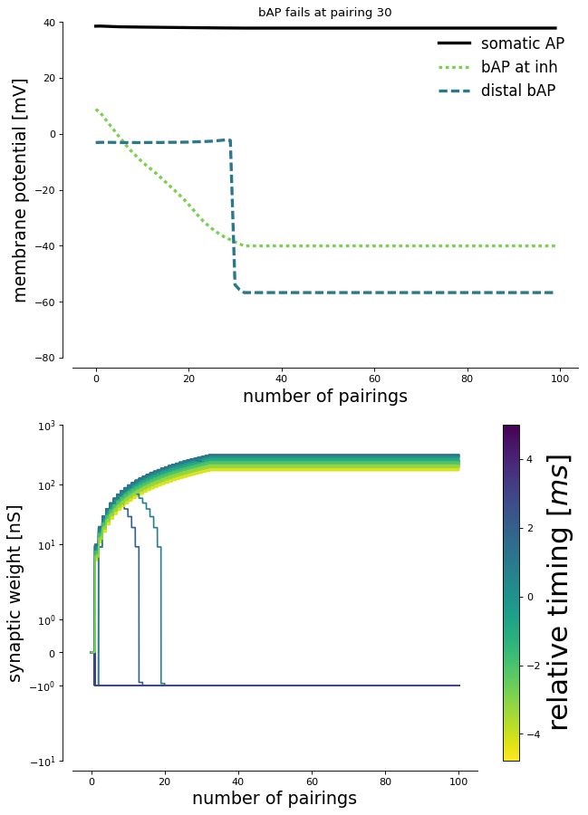

This is the readme for the models associated with the paper: Wilmes, K. A., Schleimer, J.-H. and Schreiber, S. (2017), Spike-timing dependent inhibitory plasticity to learn a selective gating of backpropagating action potentials. Eur J Neurosci, 45: 1032–1043. doi:10.1111/ejn.13326 Prerequisite: Python 2.7 or higher 1. Install NEURON: https://www.neuron.yale.edu/neuron/download 2. Compile the mod files, using: "nrnivmodl mod_files" in the directory containing the python files if unix/linux platform (see https://senselab.med.yale.edu/ModelDB/NEURON_DwnldGuide.html for help with other platforms) 3. Run the python script Wilmesetal_EJN2017.py or open the Notebook Wilmesetal_EJN2017.ipynb (see here for instructions: http://jupyter.org/install.html ) Figure 2  20171102 Updates from K Wilmes to remove an extra False printed to the command line while the simulations run.